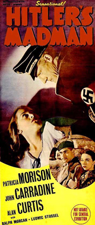
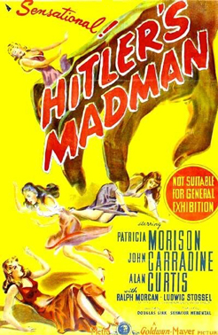
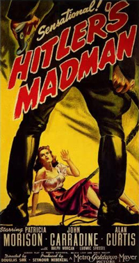

Hitler's Madman
Patricia Morison
Alan Curtis
Ralph Morgan
Ludwig Stössel
Elizabeth Russell
Louis V. Arco (uncredited)
Lester Dorr (uncredited)
SYNOPSIS
A somewhat fictionalised account of the destruction of the village of Lidice in Czechoslovakia and the events leading up to it. In 1942, the Allies parachuted a Czech resistance fighter into the area. He quickly reunites with his former girlfriend and many of the villagers who knew him from before the war.
The country is under the command of the Nazis and Protector Reinhard Heydrich rules with an iron fist, arbitrarily arresting innocents and charging them with fictitious crimes. When Heydrich is severely wounded in a roadside attack - he dies three days later - Henrich Himmler orders the destruction of Lidice. The men are herded into a churchyard where they sing defiantly as they are shot down, the village is set aflame and the women are sent to concentration camps. The town itself is leveled.
Hitler's Madman was director Douglas Sirk's first American production after fleeing Nazi Germany and abandoning his German name of Detlef Sierck.
The film was produced independently by Seymour Nebenzal under the auspices of the Producers Releasing Corporation, a "Poverty Row" studio, and filmed in one week in November 1942, under the title of Hitler's Hangman. The title was changed to Hitler's Madman to avoid confusion with Fritz Lang's similarly themed Hangmen Also Die!.
Sirk hired German cinematographer Eugen Schüfftan to shoot the film but, because Schüfftan was not allowed to work in the United States at the time, the cinematography credit was given to Jack Greenhalgh and Schüfftan was credited as "Technical Director." The film opens and closes with Edna St. Vincent Millay's 1942 poem, The Murder of Lidice.
The film was originally set to be released through Republic Pictures. However, when it was completed, Nebenzal arranged a screening for MGM chief Louis B. Mayer, who bought it, making it one of the few, and possibly the first, film to be distributed by MGM even though it was originally produced by another company. Sirk directed reshoots at MGM's own studios in May 1943, consisting of the inspection of the female university students and Clara's resulting suicide (during which an uncredited Ava Gardner appears), Heydrich's death scenes and the shooting of the male residents of Lidice.


